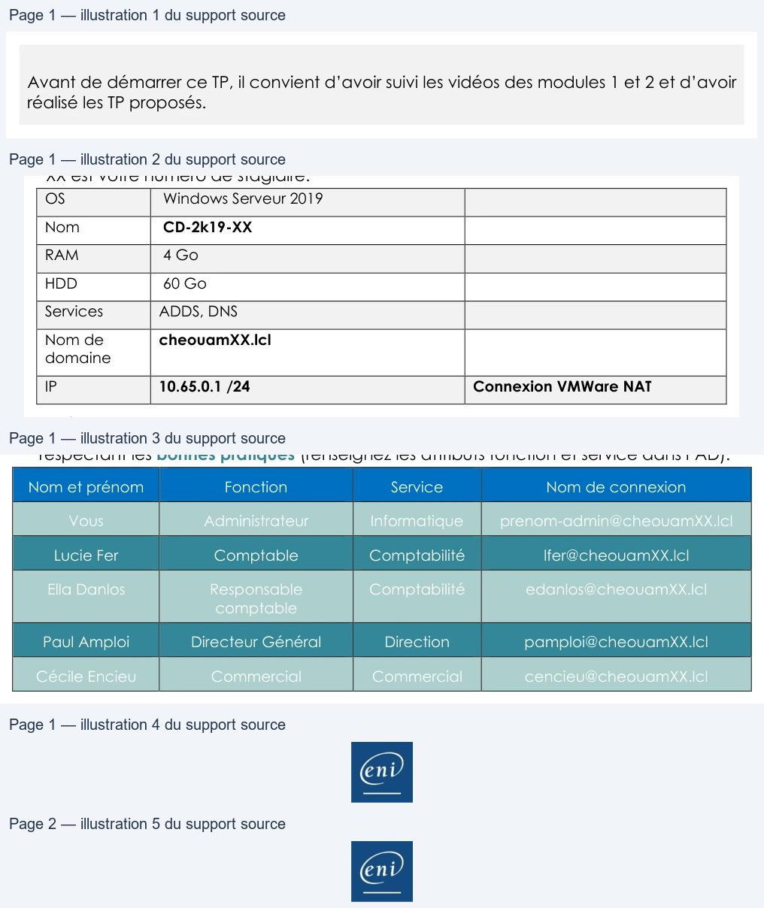

Transcription du document du Drive TSSR. La mise en forme est adaptée au Web ; les compléments IA du portail sont présentés séparément.
Cloud et Microsoft 365
TP 02 du Module 02 – Administration Microsoft 365
Avant de démarrer ce TP, il convient d’avoir suivi les vidéos des modules 1 et 2 et d’avoir
réalisé les TP proposés.
Objectifs
Synchroniser les utilisateurs de votre Active Directory local avec Microsoft 365
Prérequis
Disposer de l’ISO Windows Server 2019 en anglais.
Principales tâches à réaliser
•
Installez un serveur, contrôleur de domaine avec comme domaine cheouamXX.lcl où
XX est votre numéro de stagiaire.
OS
Windows Serveur 2019
Nom
CD-2k19-XX
RAM
4 Go
HDD
60 Go
Services
ADDS, DNS
cheouamXX.lcl
Nom de
domaine
IP
10.65.0.1 /24
Connexion VMWare NAT
•
Créez l’arborescence d’OU et les utilisateurs ci-dessous dans votre Active directory, en
respectant les bonnes pratiques (renseignez les attributs fonction et service dans l’AD).
Nom et prénom
Fonction
Service
Nom de connexion
Vous
Administrateur
Informatique
prenom-admin@cheouamXX.lcl
Lucie Fer
Comptable
Comptabilité
lfer@cheouamXX.lcl
Ella Danlos
Responsable
Comptabilité
edanlos@cheouamXX.lcl
comptable
Paul Amploi
Directeur Général
Direction
pamploi@cheouamXX.lcl
Cécile Encieu
Commercial
Commercial
cencieu@cheouamXX.lcl
Page 1/2
© ENI – Tous droits réservés
——
| OS | WindowsServeur2019 | |
| Nom | CD 2k19 XX - - | |
| RAM | 4Go | |
| HDD | 60Go | |
| Services | ADDS DNS , | |
| Nomde domaine | cheouamXXlcl . | |
| IP | 106501/24 . . . | ConnexionVMWareNAT |
| Nometprénom | Fonction | Service | Nomdeconnexion |
| Vous | Administrateur | Informatique | prenom-admin@cheouamXX .lcl |
| LucieFer | Comptable | Comptabilité | lfer@cheouamXXlcl . |
| EllaDanlos | Responsable comptable | Comptabilité | edanlos@cheouamXXlcl . |
| PaulAmploi | DirecteurGénéral | Direction | pamploi@cheouamXXlcl . |
| CécileEncieu | Commercial | Commercial | cencieu@cheouamXXlcl . |
Cloud et Microsoft 365
Pour rappel, les bonnes pratiques sont :
1 UO _cheouamXX
1 OU Utilisateurs
1 OU Comptes de service
1 OU par lieu
1 OU par service
1 modèle par type de compte
1 OU Groupes
1 OU Domaine Local
1 OU Groupe Global
1 GG par service
1 OU Archives
•
Préparez l’Active Directory à utiliser la Synchronisation AD Connect
•
Installez AzureADConnect.msi en mode express setting pour votre domaine
cheouamXX.lcl.
•
Faites une procédure et vérifiez que vos utilisateurs sont bien synchronisés.
•
Vérifiez, en PowerShell, l’intervalle de temps entre deux synchronisations.
•
Modifiez votre connecteur afin de ne synchroniser que les OU groupes et utilisateurs.
•
Créez un nouvel utilisateur et forcez immédiatement la synchronisation.
•
Ajoutez un alias à cet utilisateur, forcez à nouveau la synchronisation si besoin.
Page 2/2
© ENI – Tous droits réservés
